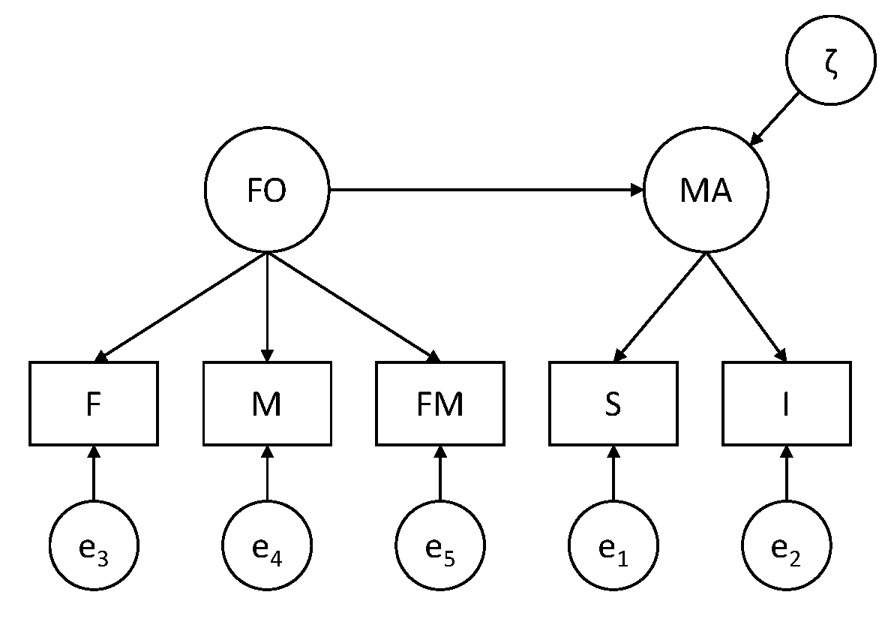

Measurement invariance
Measurement invariance is important if we want to compare individuals from different groups, or the means of different groups. Measurement invariance implies that two individuals from different groups who have the same latent score, have the same expected observed scores. It also means that if there are observed mean differences between two groups, these can only stem from latent mean differences.
When measurement invariance does not hold, we call the test (i.e., measurement instrument) biased. We may then look for the source of the bias, and try to account for this in our analyses.
Here we will show how to specify a sequence of models to test whether measurement invariance holds. These steps include:
configural invariance; this implies the same model in each group without any constraints across the groups
weak factorial invariance; this implies the factor loadings are constrained across the groups to be the same
strong factorial invariance; this implies the factor loadings and the intercepts are constrained to be the same across the groups, while the latent means in the second (and subsequent) group(s) are allowed to be estimated freely
Getting started
We start with drawing the model as a path diagram. The data come from:
Sabatelli, R. M., and Bartle-Haring (2003). Family-of-origin and adjustment in married couples. Journal of Marriage and Family, 65, 159-169. https://doi.org/10.1111/j.1741-3737.2003.00159.x
They obtained measures from 103 married couples regarding their marital adjustment and their family of origin. Here we analyze these data using a multiple group approach, although the individuals in the two groups are not independent of each other, and there are other approaches that would be more appropriate for this (such as described in the original paper, where the cases are couples, and the data of each couple consists of variables measured in the hubsand and other variables are measured in the wives).
The variables included are:
Satisfaction (S): higher levels imply fewer complaints
Intimacy (I): higher scores imply more self-disclosures, experiences of empathy and affection, and feelings of emotional closeness toward the marital partner
Father (F): higher scores imply a better relationship between the participant and his/her father
Mother (M): higher scores imply a better relationship between the participant and his/her mother
Father-mother (FM): higher scores a better relationship between the parents of the participant
The idea is that the first two variables measure Marital Adjustment (MA) and the latter three variables measure the quality of relationships in the Family of Origin (FO). Furthermore, it is assumed that FO is a predictor of MA.
Question 1
Draw the path diagram for this structural equation model.
Click to show answers
Measurement part of the model: S and I are indicators of MA; F, M, and FM are indicators of FO.
Structural part of the model: MA is regressed on FO.

Before doing the actual model that includes the structural relation between the latent variables, we start with only the measurement model; this means that we specify a two-factor model in which the latent variables are allowed to covary (i.e., a two-headed arrow between MA and FO). We use this model to investigate whether strong factorial invariance holds by testing whether the assumptions of this model hold.
Question 2
The data for this exercise are included in the file named Family.dat; note it only contains the summary statistics, that is, it contains the means, standard deviations, and correlation matrices for each group (men first, then women), that were printed in the original paper. Have a look at these.
Click to show answers
You can open the data either in Mplus, or with a program like notepad. This is what you see:
161.779 138.382 86.229 86.392 85.046
32.936 22.749 13.390 13.679 14.382
1
.740 1
.265 .422 1
.305 .401 .791 1
.315 .351 .662 .587 1
155.547 137.971 82.764 85.494 81.003
31.168 20.094 11.229 11.743 13.220
1
.658 1
.288 .398 1
.171 .295 .480 1
.264 .305 .554 .422 1Question 3
Typically when you have data, you will have the raw data. In that case you will have the observed variables and a grouping variable in one file. See example 5.14 in the Mplus Users Guide for how to specify the DATA and VARIABLE commands in that case.
Here we only have the summary data. To specify the DATA and VARIABLE commands in this case, use:
DATA: NGROUPS ARE 2;
TYPE IS MEANS STD CORR;
FILE IS Family.dat;
NOBSERVATIONS ARE 103 103;
VARIABLE: NAMES ARE S I F M FM;We will begin with using the automatic option in Mplus that allows us to run all three models that are needed to investigate measurement invariance. This can be done by adding:
ANALYSIS: MODEL = CONFIGURAL METRIC SCALAR;where CONFIGURAL is the model without any constraints across the groups; METRIC is the model we refer to as weak factorial invariance, that is, equal factor loadings across groups; and SCALAR is what we refer to as strong factorial invariance, that is, equal factor loadings and intercepts across groups, and freely estimated latent means in group 2 (and subsequent groups, if there are any).
Use the code above, and add:
TITLEcommandMODELcommand, in which you just specify the general factor model (so no need to specify separate models for separate groups!)OUTPUTcommand
Click to show answers
In the top menu in Mplus you can change the format of the output file by going to Mplus and choosing HTML output, and then run the model. This will result in output with links that makes it easier to navigate through it. At the beginning of the output, you get to see:
OUTPUT SECTIONS
Input Instructions
Input Warnings And Errors
Summary Of Analysis
Sample Statistics
Model Fit Information
- For The Configural Model
- For The Metric Model
- For The Scalar Model
Model Results
- For The Configural Model
- For The Metric Model
- For The Scalar Model
Technical 1 Output
- For The Configural Model
- For The Metric Model
- For The Scalar Model
Technical 9 Output Hence, we see that for each of the three models we get information about model fit, we get the parameter estimates, and the additional output (here, we asked for TECH1). We also get TECH9 which contains the warnings for the three models.
While this automatic option is of course very convenient in practice, we will now focus in this exercise on how to specify and run these three models ourselves. The point of this is that we see how we can overrule defaults in Mplus, and we consider the models one by one (and check the TECH1 output), and consider alternative ways of scaling these models.
Step 1: Configural invariance
Question 4
If we specify the model for configural invariance:
how many sample statistics are there?
how many free parameters are there?
how many df are there?
Click to show answers
Sample statistics. We have 5 observed variables in each group. Hence, we have 5*6/2 = 15 unique elements in the covariance matrix S for each group, plus 5 observed means, so 20 sample statistics per group. That makes 40 sample statistics in total.
Free parameter. In each group we estimate:
3 factor loadings (there are 5 factor loadings, but 2 are used for scaling)
2 factor variances
1 factor covariance
5 residual variances
5 intercepts
That makes 16 parameters per group; hence, 32 free parameters in total.
Degrees of freedom. The degrees of freedom are therefore: df = 40-32=6.
Question 5
Specify the two-factor model for configural invariance.
Click to show answers
MODEL: MA BY S I;
FO BY F M FM;
MODEL g2: MA BY S@1 I;
FO BY F@1 M FM;
[S I F M FM];
[MA@0 FO@0];where the first MODEL: command is the general model specification, and the second part MODEL g2; is overruling the multiple group factor analysis defaults through:
freeing the factor loadings (so they are not identical to the factor loadings in g1), and using
@1to ensure the factors are scaledfreeing the intercepts in the second group (so they are not identical to the intercepts in g1)
fixing the latent means to zero (to ensure identification)
Alternatively, one could also say:
MODEL: MA BY S I;
FO BY F M FM;
MODEL g2: MA BY I;
FO BY M FM;
[S I F M FM];
[MA@0 FO@0];Here, we are doing the same thing, but not overruling the default for the factor loadings of the first indicator of each latent variable (hence the initial scaling remains in tact).
In addition to this MODEL command, we specify the OUTPUT command as:
OUTPUT: TECH1 MOD(4);Question 6
Run this model, and check whether the TECH1 output matches your answer under Question 4 regarding where the free parameters are. Also check the warning(s); is there a reason for concern?
Click to show answers
We get this warning:
THE MODEL ESTIMATION TERMINATED NORMALLY
WARNING: THE RESIDUAL COVARIANCE MATRIX (THETA) IN GROUP G1 IS NOT
POSITIVE DEFINITE. THIS COULD INDICATE A NEGATIVE VARIANCE/RESIDUAL
VARIANCE FOR AN OBSERVED VARIABLE, A CORRELATION GREATER OR EQUAL TO ONE
BETWEEN TWO OBSERVED VARIABLES, OR A LINEAR DEPENDENCY AMONG MORE THAN TWO
OBSERVED VARIABLES. CHECK THE RESULTS SECTION FOR MORE INFORMATION.
PROBLEM INVOLVING VARIABLE I.This implies that the residual covariance matrix contains a combination of numbers (i.e., parameter estimates) that are not possible in a covariance matrix. We can start with checking the relevant parameter estimates in the first group:
Residual Variances
S 528.470 130.512 4.049 0.000
I -39.883 109.198 -0.365 0.715
F 21.613 10.983 1.968 0.049
M 53.509 11.710 4.570 0.000
FM 103.074 16.168 6.375 0.000It shows that the residual variance for the indicator I (intimacy) is negative; this is not possible (as variances are by definition zero or larger). This is referred to as a Heywood case, and is typically interpreted as meaning that the model is too complicated for the data (for instance because the model is really wrong, or because the sample size is too small). I is an indicator of MA, which only has one other indicator (i.e., S); this is often a difficult situation in terms of estimation.
One action we could take is setting this residual variance to zero (note the parameter is not significantly different from zero). That would mean this variable is a perfect indicator of the latent variable MA, as there would be no measurement error at all; this would in turn mean we only need this indicator, and there is no need for the second indicator to measure the latent variable.
But for now, we will just leave the variable in, and consider the model fit before moving on to testing weak factorial invariance.
Question 7
For now, we ignore this warning. What is the model fit?
Click to show answers
Chi-Square Test of Model Fit
Value 6.025
Degrees of Freedom 8
P-Value 0.6444The chi-square test indicates the model fits well (note btw that the degrees of freedom are indeed 8). We see this chi-square is simply the sum of the chi-squares that are obtained for each group, as presented in the output:
Chi-Square Contribution From Each Group
G1 4.688
G2 1.337The other fit measures also indicate the model fits very well:
RMSEA (Root Mean Square Error Of Approximation)
Estimate 0.000
90 Percent C.I. 0.000 0.095
Probability RMSEA <= .05 0.786
CFI/TLI
CFI 1.000
TLI 1.000
SRMR (Standardized Root Mean Square Residual)
Value 0.019Step 2: Weak factorial invariance
Question 8
Next, specify the model for weak factorial invariance. How many df would this model have? Run this model and report on the model fit.
Click to show answers
In the model for weak factorial invariance, we set the factor loadings invariant across groups, while not constraining the mean structure. In practice, this implies we no longer have to overrule the defaults for the factor loadings, but we still need to overrule the defaults for the intercepts and latent means. Hence, the model specification becomes:
MODEL: MA BY S I;
FO BY F M FM;
MODEL g2: [S I F M FM];
[MA@0 FO@0];While in the previous model we were estimating 3 factor loadings in each group (so 6 factor loadings in total), we now estimate 3 factor loadings for both groups. Hence, this model has 3 free parameters less, and thus 3 df more than the model for configural invariance; the df should thus be 8+3=11. This also becomes clear when looking at the TECH1 output of this model (see the numbers that identify the free parameters in the matrix LAMBDA).
We see this in the chi-square test:
Chi-Square Test of Model Fit
Value 8.735
Degrees of Freedom 11
P-Value 0.6463We see indeed the number of df is 11.
Question 9
Do a chi-square difference test to determine whether the assumption of weak factorial invariance (i.e., equal factor loadings across groups) holds.
Click to show answers
\(\Delta \chi^2 = 8.735 - 6.025 = 2.710\)
\(\Delta df = 11 - 8 = 3\)
Hence, the chi-square difference is 2.710 with df=3. The p-value for this is 0.4385 (for an online chi-square calculator, see for instance: https://www.fourmilab.ch/rpkp/experiments/analysis/chiCalc.html).
This means that our H0 (i.e., weak factorial invariance) is not rejected. Put differently, the constraints for weak factorial invariance can be imposed.
Step 3: Strong factorial invariance
Question 10
Next, specify the model for strong factorial invariance. Again, indicate how many df this model will have, run the model, and report on the model fit.
Click to show answers
Strong factorial invariance is the default multiple group factor model that Mplus runs. Hence, it does not require us to overrule any of its defaults. Compared to the previous model, this means that it will constrain all five intercepts to be identical across the two groups, but at the same time, it will freely estimate the two latent means in the second group. Hence, the difference in df is 5-2=3; the new model with have 3 df more than the one we had before.
The MODEL command for this model is very simple; we only need:
MODEL: MA BY S I;
FO BY F M FM; The chi-square of this model is:
Chi-Square Test of Model Fit
Value 15.647
Degrees of Freedom 14
P-Value 0.3354We see that indeed the df are 3 more than before (11+3=14).
Exercise 11
Do a chi-square difference test to determine whether the assumption of strong factorial invariance (i.e., equal intercepts; only latent mean differences) holds.
Click to show answers
We compare the current model fit to that of the previous model (i.e., the one for weak factorial invariance), to determine whether the additional constraints are tenable.
Hence we have:
\(\Delta \chi^2 = 15.647 - 8.735 = 6.912\)
\(\Delta df = 14 - 11 = 3\)
A chi-square difference test of 6.912 with 3 df has a p-value of 0.0748. Hence, again, the H0 is not rejected, which now means we can assume that strong factorial invariance holds.
Exercise 12
Check the TECH1 output for the latter model. How do you see the constraints that were imposed?
Click to show answers
You can see the intercepts and factor loadings are constrained across the two groups, because the same numbers are used to show which ones are estimated freely:
NU
S I F M FM
________ ________ ________ ________ ________
1 2 3 4 5
LAMBDA
MA FO
________ ________
S 0 0
I 6 0
F 0 0
M 0 7
FM 0 8Alternative way of scaling
Above, we have used the usual way of scaling:
first factor loading of each latent variable fixed to 1 (in each group)
all latent means fixed to 0 (in each group), combined with estimating the intercepts for the observed variables freely (in each group)
In this case, the step from configural to weak factorial invariance now consists of only adding more constraints, which makes it easy to see these two models are nested (i.e., the model for weak factorial invariance is nested under the model for configural invariance).
However, it is less obvious that the model for strong factorial invariance is nested under the model for weak factorial invariance, because it includes constraining parameters (i.e., the intercepts have to be equal across groups), but also requires freeing parameters (i.e., the latent means in the second group are freed).
To ensure that these models are nested, we use an alternative way of specifying these models, based on a different way of scaling. The key issue here is that these alternative model specification are simply reparameterizations of the the same models; they are equivalent models, as we can see because they lead to the exact same model fit.
Question 13
Instead of scaling with the latent means fixed to zero and the intercepts all estimated freely, scale the latent variable in the model for configural invariance through setting the intercept for the first indicator to zero, while allowing the latent mean to be estimated freely. Compare the model fit to the one obtained above for the configural invariance model.
Click to show answers
The MODEL command can be specified as:
MODEL: MA BY S I;
FO BY F M FM;
MODEL g1: [S@0 F@0];
[MA FO];
MODEL g2: MA BY S@1 I;
FO BY F@1 M FM;
[S@0 I F@0 M FM];When running the model like this, it does not converge within the default number of iterations. We get this message
NO CONVERGENCE. NUMBER OF ITERATIONS EXCEEDED.and there is no model fit, standard errors, or p-values. This can mean the model is too complicated. It can also mean you need to specify (better) starting values. As a first step, we can just increase the number of iterations, by adding:
ANALYSIS: ITERATIONS ARE 20000;In this case, this solves it, that is, the model now converges. When considering the model fit, we see it is exactly the same as that of the model discussed in Question 7.
Chi-Square Test of Model Fit
Value 6.025
Degrees of Freedom 8
P-Value 0.6444Because the chi-square is exactly the same (and the df), this implies these models are statistically equivalent; they are identical, just parameterized differently. You cannot distinguish between them on statistical grounds.
Hence, this shows that this alternative way of scaling the latent variables gives a model that is equivalent.
Question 14
Next, use this alternative way of scaling and specify the model for weak factorial invariance.
Click to show answers
The MODEL command can be specified as:
MODEL: MA BY S I;
FO BY F M FM;
MODEL g1: [S@0 F@0];
[MA FO];
MODEL g2: [S@0 I F@0 M FM];That is, we no longer overrule the defaults for the factor loadings. Note that for this model to converge, we do not need to increase the number of iterations.
When considering the model fit, we see it is exactly the same as that of the model discussed in Question 8:
Chi-Square Test of Model Fit
Value 8.735
Degrees of Freedom 11
P-Value 0.6463This means that the current model is statistically equivalent to the model we had before to impose weak factorial invariance.
Question 15
And now, the Moment Suprême: We will specify the model for strong factorial invariance using this alternative way of scaling. The key issue to notice here is that in going from weak factorial invariance to strong factorial invariance, we will now only add constraints, which makes it very clear that the latter model must be nested under the former.
Remember that before, we were adding constraints (i.e., fixing the intercepts to be identical across the groups), but also were freeing parameters (i.e., allowing the latent means in the second group to be estimated freely); this makes it difficult to see that the model for strong factorial invariance is nested under that of weak factorial invariance.
But with this alternative way of scaling, which leads to statistically equivalant models (i.e., models with the exact fit, and which are thus indistinguishable), we now only add constraints on parameters when going from weak to strong factorial invariance, such that it is very obvious that (and how) they are nested.
Specify the model for strong factorial invariance using this alternative way of scaling.
Click to show answers
The MODEL command can be specified as:
MODEL: MA BY S I;
FO BY F M FM;
MODEL g1: [S@0 F@0];
[MA FO];
MODEL g2: [S@0 F@0];This model leads to the exactly same model fit as that of the model discussed in Question 10:
Chi-Square Test of Model Fit
Value 15.647
Degrees of Freedom 14
P-Value 0.3354This means that the current model is statistically equivalent to the model we had before to impose strong factorial invariance. This also means that we can now be certain that the model for strong factorial invariance is nested under the model for weak factorial invariance; this means we can do a chi-square difference test to compare them (as we already did above).
Question 16
While this alternative way of specifying the series of models is useful to seeing their nestedness, the first way of specifying the models also has advantages. One of these advantages is that it requires fewer defaults to be overruled. But more importantly, it allows us to easily determine in the strong factorial invariance model whether there are latent mean differences between the groups. Report and interpret these.
Click to show answers
In the first approach, the model for strong factorial invariance is based on constraining the factor loadings and intercepts across the groups, and freeing the latent means in the second group, while the means in the first group are fixed to zero.
That is, for G1 we get:
Means
MA 0.000 0.000 999.000 999.000
FO 0.000 0.000 999.000 999.000and for G2 we get:
Means
MA -0.415 3.118 -0.133 0.894
FO -3.140 1.655 -1.898 0.058This implies that the significance test of the latter can be used to determine whether there are latent mean differences between the second and the first group. Here we get a p-value of 0.894 for MA, and a p-value of 0.058 for FO; hence for both we do not find evidence that they differ from zero, which means that for both we do not find evidence that the two groups differ.
Full model
As both the test for weak and for strong factorial invariance were non-significant, we can conclude that strong factorial invariance holds. This means we can compare individuals from these groups, and we can compare the means of these groups. It also means that the constructs “Marital Adjustment” and “Family of Origin” are measured in the same way in these two groups, and that we can specify a structural model for these latent variables in the two groups to investigate how they are related.
Question 17
Specify the model as initially intended, with FO as a predictor of MA at the latent level, while assuming strong factorial invariance.
Click to show answers
The model is now specified as:
MODEL: MA BY S I;
FO BY F M FM;
MA ON FO;Question 18
Run this model, and compare the model fit to that of the model for strong factorial invariance that we had before. What do you conclude?
Click to show answers
These models have the exact same model fit (same chi-square and df). This means these models are statistically equivalent. Hence, it does not matter whether you estimate the covariance between the two latent variables, or a regression coefficient.
Question 19
When comparing the TECH1 output of these two models, what difference do you spot?
Click to show answers
In the two-factor model we have for G1:
BETA
MA FO
________ ________
MA 0 0
FO 0 0
PSI
MA FO
________ ________
MA 14
FO 15 16that is, no structural parameters, and a covariance is Psi; in contrast in the regression model we have for G1:
BETA
MA FO
________ ________
MA 0 14
FO 0 0
PSI
MA FO
________ ________
MA 15
FO 0 16showing there is a structural parameter in Beta (going to MA, coming from FO), and there is no covariance estimated in Psi.
The same is true for G2.
Question 20
As a final step, we want to investigate whether the regression coefficient is different in the two groups or not. How can you investigate this?
Click to show answers
In the model above, the regression parameter was not constrained across the groups. We can now specify a model in which we constrain the parameter to be invariant across the two groups; that model will be nested under the previous model, and we can thus do a chi-square difference test to see whether the constraint holds.
To constrain the parameter across the groups, we only have to give it a label (i.e., a name). Here we will give it the label c (you could als give it a longer name, such as coeff). The model is now specified as:
MODEL: MA BY S I;
FO BY F M FM;
MA ON FO (c);To see that this leads to having the same regression coefficient in both groups, we can check the TECH1 output. For G1 we have (only showing part of it):
ALPHA
MA FO
________ ________
0 0
BETA
MA FO
________ ________
MA 0 14
FO 0 0
PSI
MA FO
________ ________
MA 15
FO 0 16and for G2:
ALPHA
MA FO
________ ________
22 23
BETA
MA FO
________ ________
MA 0 14
FO 0 0
PSI
MA FO
________ ________
MA 24
FO 0 25It shows that the structural parameter in both cases is the same parameter (number 14).
The model fit is:
Chi-Square Test of Model Fit
Value 16.315
Degrees of Freedom 15
P-Value 0.3614showing it has 1 df more than the model we had before (because we estimate 1 parameter less). Doing a chi-square difference test we get:
\(\Delta \chi^2 = 16.315 - 15.647 = 0.688\) with \(df-1\), which gives a p-value of 0.4137, which means the test is not significant. Hence, H0 does not have to be rejected, and we can therefore assume that the regression coefficient is identical across the two groups.
Conclusion
To summarize what we did in this exercise:
we were interested in investigating a full SEM model (with both a measurement model and a structural model), in two groups
before we could investigate the structural part of the model (i.e., the latent regression), we had to determine whether there was measurement invariance across the groups
to this end we ran a series of three models: configural invariance, weak factorial invariance and strong factorial invariance; these models are increasingly more restrictive, and we compared each subsequent model with the preceding one (using a chi-square different test) to see whether the additional constraints were tenable
since neither of the two chi-square difference test reached significance, we can conclude that strong factorial invariance holds; this means we are measuring the same constructs in both groups, and we can compare their latent means
we also considered an alternative way to scale the models (based on setting one of the intercepts per factor to zero, rather than the latent means), which more clearly shows that the model for strong factorial invariance is a special case of the model for weak factorial invariance
the first way of scaling has the advantage that we can immediately see whether the means of the two groups on the latent variables differ or not; here we found no significant difference
since the latent variables are measured in the same way in both groups, we continue with our actual research question, which concerns the latent regression model; regressing the latent variables on each other resulted in a model that is equivalent to the model for strong factorial invariance
subsequently, we constrained the regression coefficient across the two groups to see whether the effect of family of origin (FO) has the same effect on marital adjustment (MA) in the two groups; again, by doing a chi-square difference test we could determine whether or not this constraint was tenable; since the test was not significant, we may assume that the two regression slopes are the same across the groups
note that in the end, we still have the same warning as for the first model about a Heywood case (negative variance) in the first group; we should present such results in a paper; we could constrain this variance to zero (and we could do the same thing in the other group, because it is not significantly different from zero there either), which would make this indicator and the latent variable it measures identical; put differently, this implies that we can measure marital adjustment with this one variable, and we do not need the other one for it